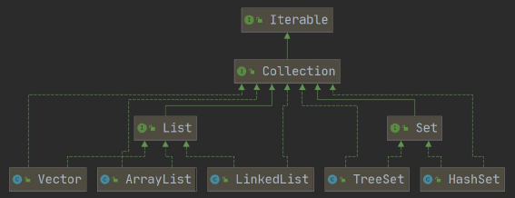
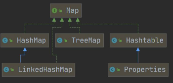

14集合
1. 集合介绍¶
2022年6月23日
19:54
- 数组(的不足) 1. 长度在开始时必须指定, 并且一旦指定就不能再更改 2. 保存的必须是同一类型的元素 3. 使用数组进行增加/删除比较麻烦(扩容需要重新建立一个数组)
- 集合 1. 可以==动态保存==任意多个对象, 使用较为方便 2. 提供了一系列便于操作对象的方法: add、remove、set、get等 3. 使用集合添加、删除新元素比较简单
集合的分类¶
- 集合的分类
Java的集合类很多, 主要分为两大类


-
集合主要是两组(单列集合, 双列集合)
-
Collection 接口有两个重要的子接口List Set , 他们的实现子类都是单列集合
-
Map 接口的实现子类是双列集合，存放的K-V(key-value)
2. Collection接口和常用方法¶
-
Collection接口实现类的特点
public interface Collection<E> extends Iterable<E>1. Collection实现子类可以存放多个元素, 每个元素可以是Object 2. 有些Collection的实现类可以存放重复的元素, 有些不可以 3. Collection的子接口: List有序, Set可以不是有序 4. Collection接口没有直接的实现子类, 而是通过它的子接口List和Set来实现
-
Collection接口常用方法, (以子类ArrayList演示)
List list = new ArrayList(); //add:添加单个元素 list.add("test");list.add(250);list.add(true); System.out.println("list="+list); //remove:删除指定元素 list.remove(true);//删除指定元素 list.remove(0);//删除第一个元素 //contains:查找指定元素是否存在 System.out.println(list.contains(250)); //size:获取元素个数 System.out.println(list.size()); //isEmpty System.out.println(list.isEmpty()); //clear:清空 list.clear(); System.out.println("list="+list); //addAll:添加多个元素 ArrayListlist2=newArrayList();list2.add("abandon");list2.add("delight"); list.addAll(list2); System.out.println("list="+list); //containsAll:查找多个元素是否都存在 System.out.println(list.containsAll(list2)); //removeAll:删除多个元素 list.add("digital"); list.removeAll(list2); System.out.println("list="+list); -
Iterator-(Collection接口遍历元素方式1)
1. 基本介绍 * Iterator对象成为迭代器, 主要用于遍历Collection集合中的元素
* 所有实现了Collection接口的集合类都有一个iterator()方法, 用于返回一个实现了Iterator接口的对象, 即可以返回一个迭代器
* Iterator的结构
* Iterator仅用于遍历集合, Iterator本身并不存放对象
2. 关于Iterator主要有三个方法：hasNext()、next()、remove()
- hasNext：没有指针下移操作，只是判断是否存在下一个元素
- next：指针下移，返回该指针所指向的元素 (最开始迭代器指向的是空位置)
- remove：删除当前指针所指向的元素，一般和next方法一起用，这时候的作用就是删除next方法返回的元素
- 快速生成while遍历快捷键: itit
-
for循环-（Collection接口遍历元素方式2）
-
增强for循环, 可以代替iterator迭代器(本质上就是简化版iterator, 本质一样, 只能遍历集合或者数组)
-
基本语法
-
2.1 List接口¶
2.1.1 List接口和常用方法¶
-
List接口介绍 1. List接口是 Collection 接口的子接口
2. List集合类中元素有顺序, 且可重复(双向链表)
3. List集合中的每个元素都有其对应的顺序索引, 即支持索引
4. List容器中的每个元素都对应一个下标, 可根据下标存取
5. List接口的实现类:
 ==常用:ArrayList, LinkedList, Stack, Vector== * ArrayList实现为可调整大小的数组。 随着更多的元素被添加到ArrayList中，它的大小会动态增加。 它的元素可以通过使用get和set方法直接访问，因为ArrayList本质上是一个数组。 * LinkedList实现为一个双链表。 它在添加和删除上的性能优于ArrayList，但在get和set方法上的性能则较差。 * Vector与ArrayList类似，但它是同步的。 -
List接口常用方法
List list = new ArrayList();
list.add("张三丰");
list.add("贾宝玉");
//void add(int index, Object ele): 在index位置插入ele元素
//在index = 1 的位置插入一个对象
list.add(1, "韩顺平");
System.out.println("list=" + list);
//boolean addAll(int index, Collection eles):从index 位置开始将eles中的所有元素添加进来
List list2 = new ArrayList();
list2.add("jack");
list2.add("tom");
list.addAll(1, list2);
System.out.println("list=" + list);
//Object get(int index):获取指定index 位置的元素
//int indexOf(Object obj):返回obj 在集合中首次出现的位置
System.out.println(list.indexOf("tom"));//2
//int lastIndexOf(Object obj):返回obj 在当前集合中末次出现的位置
list.add("韩顺平");
System.out.println("list=" + list);
System.out.println(list.lastIndexOf("韩顺平"));
//Object remove(int index):移除指定index 位置的元素，并返回此元素
list.remove(0);
System.out.println("list=" + list);
//Object set(int index, Object ele):设置指定index 位置的元素为ele , 相当于是替换.
list.set(1, "玛丽");
System.out.println("list=" + list);
//List subList(int fromIndex, int toIndex):返回从fromIndex 到toIndex 位置的子集合
// 注意返回的子集合fromIndex <= subList < toIndex
List returnlist = list.subList(0, 2);
System.out.println("returnlist=" + returnlist);
-
List的三种遍历方式[ArrayList, LinkedList, Vector]
-
使用iterator
Iterator iter = list.iterator(); -
使用增强for
for(Object o:list) {} -
使用普通for和get访问
-
2.1.2 ArrayList类¶
ArrayList底层结构和源码分析¶
-
ArrayList的注意事项 1.
permits all elements, including {@code null}.ArrayList可以加入null, 并且可以是多个2. ArrayList使用==数组==存储数据
```java transient Object[] elementData;//non-private to simplify nested class access ```3. ArrayList基本等同于Vector, 区别在于:
ArrayList==线程不安全==, 但执行效率高, 多线程情况下不建议使用ArrayList -
ArrayList底层操作机制 源码分析
- ArrayList维护了一个Object类型的数组elementData
transient: 瞬间的, 短暂的, 表示该属性不会被序列化
- ArrayList维护了一个Object类型的数组elementData
-
当创建ArrayList对象时,
如果使用无参构造器, 初始elementData容量为0, 第一次添加扩容至10, 之后扩容为1.5倍
使用指定大小的构造器, 初始elementData容量为制定大小, 之后如果需要, 扩容为1.5
ArrayList.add()方法源码public boolean add(E e){ modCount++; //修改次数, 与线程有关 add(e,elementData,size); return true; } private void add(E e, Object[] elementData,int s){ if(s == elementData.length) //判断是否需要扩容 elementData = grow(); elementData[s] = e; size = s + 1; } private Object[] grow(){ return grow(size+1); } private Object[] grow(int minCapacity){ return elementData = Arrays.copyOf(elementData, newCapacity(minCapacity)); } private int new Capacity(int minCapacity){ //overflow-consciouscode int oldCapacity = elementData.length; int newCapacity = oldCapacity + (oldCapacity >> 1); if (newCapacity - minCapacity <= 0){ if(elementData == DEFAULTCAPACITY_EMPTY_ELEMENTDATA) return Math.max(DEFAULT_CAPACITY,minCapacity); if(minCapacity < 0) //overflow throw new OutOfMemoryError(); return minCapacity; } return (newCapacity - MAX_ARRAY_SIZE <= 0) ? newCapacity : hugeCapacity(minCapacity); }
2.1.3 Vector类¶
2022年6月27日
19:36
Vector底层结构和源码分析¶
-
vector基本介绍 1. Vector类定义
```java public class Vector<E> extends AbstractList<E> implements List<E>, RandomAccess, Cloneable, java.io.Serializable ```2. Vector底层同样是一个对象数组
3. Vector是线程同步的, 即线程安全 Vector类的操作方法带有synchronized
开发中, 需要线程同步安全时, 使用Vector -
ArrayList vs Vector
| 底层结构 | 版本 | 线程安全/(同步)效率 | 扩容方式 | |
|---|---|---|---|---|
| ArrayList | 可变数组 | JDK1.2 | 线程不安全, 效率高 | 无参构造默认0,第一次扩容至10,之后1.5倍扩容 有参构造1.5倍扩容 |
| Vector | 可变数组 | JDK1.0 | 线程安全, 效率不高 | 无参构造默认10, 之后2倍扩容 有参构造2倍扩容 |
- Vector底层实现 一些小插曲
1. 无参构造器: 直接调用容量为10的有参构造器
```java public Vector(){ this(10); } ```2. 有参构造器
3. add (jdk8)
2.1.4 LinkedList类¶
2022年6月27日
19:37
LinkedList底层结构¶
- LinkedList基本介绍 1. LinkedList底层实现了==双向链表==和==双端队列== 2. 可以添加任意元素(元素可以重复), 包括null 3. 线程不安全, 没有实现同步
- LinkedList的底层操作机制 1. LinkedList==底层==维护了一个==双向链表== 2. 维护了两个属性first(头指针)指向首节点, 和last(尾指针), 指向尾结点 3. 每个节点为Node对象, 其中维护prev, next, item三个属性 4. 通过链表的添加和删除效率更高
- ArrayList和LinkedList的比较
| 底层结构 | 增删的效率 | 改查的效率 | |
|---|---|---|---|
| ArrayList | 可变数组 | 低(因为需要数组扩容) | 高(可以随机存取) |
| LinkedList | 双向链表 | 高 | 低(必须顺序查找) |
如何选择:
- 一般来说, 一个项目中80%-90%都是查询, 大部分情况会选择ArrayList
- 在一个项目中, 可以根据业务灵活选择, 可以在一个模块中使用ArrayList, 另一个模块使用LinkedList
2.2 Set接口¶
2022年6月27日
19:33
2.2.1 Set接口和常用方法¶
-
set接口基本介绍 1. 无序(按照固定顺序,与存取顺序不一致), 没有索引(index) 2. 不允许重复元素 (只能包含一个null) 3. Set接口实现类:
 -
set接口常用方法
因为Set接口是Collection子接口, 常用方法与Collection接口一样
-
set接口遍历方式 1. Iterator 2. 增强for 3. ==不能使用==fori, 因为没有索引
2.2.2 HashSet类¶
-
HashSet说明 1. HashSet实现了Set接口
2. HashSet本质上是HashMap, 构造器中建立了一个map
```java public HashSet(){ map = new HashMap<>(); } ```3. 不能有重复元素/对象, 可以存放null值, 但是只能有一个null
4. HashSet不保证元素的存取顺序有序, 而是取决于hash之后的索引顺序
-
HashSet底层机制-putVal
1. 执行 HashSet()
```java public HashSet() { map = new HashMap<>(); } ```2. 执行 add()
```java public boolean add(E e) {//e = "java" return map.put(e, PRESENT)==null; //(static) PRESENT = new Object(); } ```3. 执行 HashMap的put() , 该方法会执行 hash(key) 得到key对应的hash值
算法 : `h = key.hashCode()) ^ (h >>> 16)` ```java public V put(K key, V value) { //key = "java" value = PRESENT 共享 return putVal(hash(key), key, value, false, true); } ``` ```java static final int hash(Object key) { int h; return (key == null) ? 0 : (h = key.hashCode()) ^ (h >>> 16); } ```4. 执行 putVal
- ```java
final V putVal(int hash, K key, V value, boolean onlyIfAbsent, boolean evict) {
Node<K,V>[] tab; Node<K,V> p; int n, i; //定义了辅助变量 //table 是 HashMap 的一个数组，类型是 Node[] if ((tab = table) == null || (n = tab.length) == 0) //如果当前table 是null, 或者 大小=0，就是第一次扩容，扩容到16个空间. n = (tab = resize()).length; if ((p = tab[i = (n - 1) & hash]) == null) //根据key得到的hash 去计算该key应该存放到table表的哪个索引位置，并把这个位置的对象赋给p //判然后判断p 是否为null tab[i] = newNode(hash, key, value, null); //(如果p为null, 表示这个位置还没有存放元素, 就创建一个Node (key="java",value=PRESENT), //就放在该位置 tab[i] = newNode(hash, key, value, null) else { Node<K,V> e; K k; //临时变量 //如果当前索引位置对应的链表的第一个元素 和 准备添加的key的hash值一样 //且满足 下面两个条件之一: //① 准备加入的key 和 p 指向的Node 结点的 key 是同一个对象 //② p 指向的Node 结点的 key 的equals() 和准备加入的key比较后相同, 就不能加入 if (p.hash == hash && ((k = p.key) == key || (key != null && key.equals(k)))) e = p; else if (p instanceof TreeNode) //再判断 p 是不是一颗红黑树, e = ((TreeNode<K,V>)p).putTreeVal(this, tab, hash, key, value); //如果是一颗红黑树，就调用 putTreeVal , 来进行添加 else { //如果table对应的索引位置已经是一个链表, 就使用for循环比较 for (int binCount = 0; ; ++binCount) { if ((e = p.next) == null) { //都不相同,则将该元素加入到链表的最后 p.next = newNode(hash, key, value, null); if (binCount >= TREEIFY_THRESHOLD(8) - 1) // 判断是否达到8个节点 treeifyBin(tab, hash); //树化, 将链表转化为红黑树 // 注意，在treeifyBin时，会进行判断, 判断条件 //if (tab == null || (n = tab.length) < MIN_TREEIFY_CAPACITY(64)) // resize(); // 如果上面条件成立，先table扩容. // 只有上面条件不成立时，才进行转成红黑树 break; } if (e.hash == hash && ((k = e.key) == key || (key != null && key.equals(k)))) break; //如果已存在相同与key相同的元素, 退出循环 p = e; } } if (e != null) { // existing mapping for key V oldValue = e.value; if (!onlyIfAbsent || oldValue == null) e.value = value; afterNodeAccess(e); return oldValue; } } ++modCount; //size 就是我们每加入一个结点Node(k,v,h,next), size++ if (++size > threshold) resize(); afterNodeInsertion(evict); //空方法,留给HashSet子类实现 return null; }```
3. HashSet底层机制<本质HashMap>-扩容与树化
1. HashSet底层是key为set的存储值， value为HashSet内部static对象PRESENT 的HashMap 2. 第一次添加时, table数组扩容到16, <font color='#66ccff'>临界值(threshold)</font>为 16<font color='#66ccff'>加载因子(loadFactor)</font> <font color='orange'>(default为0.75)</font> = 16 * 0.75 = 12 <font color='green'>threshould: The next size value at which to resize(capacity load factor).</font> 3. 如果table数组使用到了临界值12, 就会扩容至16 * 2 = 32, 新的临界值也会提升 31 * 0.75 = 24 4. 在Java8中, 如果<font color='#EE0000'>①</font>==一个链表的元素个数到达TREEIFY_THRESHOLD(default为8)==, 且<font color='#EE0000'>②</font>==table的大小>=MIN_TREEIFY_CAPACITY(default为64)==, 就会对链表进行树化, 否则仍然采用数组扩容机制4. 总结:
1. HashSet的比较是基于==hashCode()==和==equals()==方法判断的,二者均相同时判定为重复 > 想要自定义重复判断, 就重写这两个方法(Alt + Insert可以快捷构造)
Node结构 (源码)¶
static class Node<K,V> implements Map.Entry<K,V> {
final int hash;
final K key;
V value;
Node<K,V> next;
Node(int hash, K key, V value, Node<K,V> next) {
this.hash = hash;
this.key = key;
this.value = value;
this.next = next;
}
public final K getKey() { return key; }
public final V getValue() { return value; }
public final String toString() { return key + "=" + value; }
public final int hashCode() {
return Objects.hashCode(key) ^ Objects.hashCode(value);
}
public final V setValue(V newValue) {
V oldValue = value;
value = newValue;
return oldValue;
}
public final boolean equals(Object o) {
if (o == this)
return true;
if (o instanceof Map.Entry) {
Map.Entry<?,?> e = (Map.Entry<?,?>)o;
if (Objects.equals(key, e.getKey()) &&
Objects.equals(value, e.getValue()))
return true;
}
return false;
}
}
2.2.3 LinkedHashSet¶
- LinkedHashSet类介绍 1. LinkedHashSet类是HashSet类的子类 2. LinkedHashSet类底层是==LinkedHashMap==, 底层维护了一个==数组+双向链表== 3. LinkedHashSet根据元素的hashCode值来决定元素的存储位置, 同时使用链表来维护元素的次序, 这就使得元素看起来是以==插入顺序保存==的 4. LinkedHashSet同样==不允许添加重复元素==
- LinkedHashSet底层结构 1. LinkedHashSet中维护了一个==hash表和双向链表== (LinkedHashSet有head和tail) 2. 每一个节点有before和after属性,这样可以形成双向链表 3. 在添加一个元素时,先求hash值,在求索引,确定该元素在table的位置，然后将添加的元素加入到双向链表(如果已经存在,不添加[原则和hashSet一样]) 4. 这样的话,我们遍历LinkedHashSet 也能确保插入顺序和遍历顺序一致
3. Map接口和常用方法¶
2022年6月29日
22:23
-
Map接口实现类的特点
1. Map和Collection并列存在, Map用于保存具有映射关系的数据: 2. Map的key和value可以是任何引用类型的数据, 会将它们封装到 HashMap$Node(内部类)对象中static class Node<K,V> implements Map.Entry<K,V>由于Node实现Entry接口, 也称一对k-v为一个<font color='#66ccff'>**Entry**</font> 1. ==key不允许重复==(原因与HashSet一样), value可以重复 2. 常用String类作为key 3. 可以通过key查找value3. Map的常用实现类: HashMap、 Hashtable 和 Properties。
-
Map接口常用方法
remove:根据键删除映射关系 get：根据key获取value size:获取map中的元素个数 isEmpty:判断是否为空 clear:清除k-v(清空) containsKey:查找键是否存在public class MapMethod { public static void main(String[] args) { //演示map接口常用方法 Map map = new HashMap(); map.put("邓超", new Book("", 100));//OK map.put("邓超", "孙俪");//替换-> 一会分析源码 map.put("王宝强", "马蓉");//OK map.put("宋喆", "马蓉");//OK map.put("刘令博", null);//OK map.put(null, "刘亦菲");//OK map.put("鹿晗", "关晓彤");//OK map.put("hsp", "hsp的老婆"); System.out.println("map=" + map); // remove:根据键删除映射关系 map.remove(null); System.out.println("map=" + map); // get：根据key获取value Object val = map.get("鹿晗"); System.out.println("val=" + val); // size:获取map中的元素个数 System.out.println("k-v=" + map.size()); // isEmpty:判断是否为空 System.out.println(map.isEmpty());//F // clear:清除k-v(清空) map.clear(); System.out.println("map=" + map); // containsKey:查找键是否存在 System.out.println("结果=" + map.containsKey("hsp"));//T } } -
Map接口遍历
-
key: 用keySet()方法, 将所有的key用Set存储, 对key进行遍历
Set keyset = map.keySet();1. 强化for
```java for (Object key : keyset) { System.out.println(key + "-" + map.get(key)); } ```2. 迭代(Iterator)
```java Iterator iterator = keyset.iterator(); while (iterator.hasNext()) { Object key = iterator.next(); System.out.println(key + "-" + map.get(key)); } ``` -
value: 用values()方法, 将所有的value用Collection存储, 对value进行遍历
Collection values = map.values(); 这里可以使用所有的Collections使用的遍历方法
1. 强化for
```java for (Object value : values) { System.out.println(value); } ```2. 迭代器
```java Iterator iterator2 = values.iterator(); while (iterator2.hasNext()) { Object value = iterator2.next(); System.out.println(value); } ``` -
k-v: 用entrySet()方法, 将所有的key-value用Set存储, 对k-v进行遍历
Set entrySet = map.entrySet();// EntrySet<Map.Entry<K,V>>1. 强化for
```java for (Object entry : entrySet) { //将entry 转成 Map.Entry Map.Entry m = (Map.Entry) entry; System.out.println(m.getKey() + "-" + m.getValue()); } ```2. 迭代器
```java Iterator iterator3 = entrySet.iterator(); while (iterator3.hasNext()) { Object entry = iterator3.next(); System.out.println(entry.getClass()); //class java.util.HashMap$Node //map未使用泛型, 需要向下转型 Map.Entry Map.Entry m = (Map.Entry) entry; System.out.println(m.getKey() + "-" + m.getValue()); } ```- 注意 : 没有用泛型的话, getValue和getKey返回的是Object, 要记得向下转型
-
3.1HashMap类¶
2022年7月1日
21:18
-
HashMap介绍
1. HashMap是 Map 接口==使用频率最高==的实现类 2. HashMap 是以key-val对的方式来存储数据(HashMap$Node)[案例Entry] 3. key 不能重复,但是==值可以重复==,允许使用null键和null值。 4. 如果添加相同的key，则会==覆盖==原来的key-val ,等同于修改.(key不会替换，val会替换) 5. 与HashSet一样，不保证映射的顺序，因为底层是以hash表的方式来存储的.
(jdk8的hashMap底层数组+链表+红黑树)6. HashMap没有实现同步, 线程不安全，方法没有做同步互斥的操作,没有synchronized
-
HashMap底层机制
* 扩容机制[和HashSet相同]
1. HashMap底层维护了Node类型的数组table, 默认为null
2. 当创建对象时，将加载因子(loadfactor，判断何时应该扩容)初始化为0.75.
3. 当添加key-val时，通过key的哈希值(hash方法)得到key在table中的索引。
5. 判断该索引处是否有元素： 1. 如果没有元素直接添加；
2. 如果该索引处有元素，继续判断该元素的key和准备加入的key相是否等 1. 如果相等，则直接==替换==val; 2. 如果不相等需要判断是树结构还是链表结构，做出相应处理。 * 如果添加时发现容量不够，则需要扩容。5. 第1次添加，则需要==扩容table容量为16==，临界值(threshold)为12 (160.75)
6. 以后再扩容，则需要扩容table容量为原来的==2倍==(32)，临界值为原来的2倍,即24,依次类推
8. 在Java8中,如果一个链表
<font color='#EE0000'>①</font>元素个数达到TREEIFY_THRESHOLD(==默认是8==) <font color='#EE0000'>②</font>table的大小 >= MIN TREEIFY_CAPACITY(默认64) 就会将该链表树化(红黑树)
3.2HashTable类¶
2022年7月2日
15:08
- HashTable介绍 1. 存放的元素是键值对，即K-V 2. HashTable的键和值==都不能==为null，否则会抛出NullPointerException异常（HashMap的key可以有一个null） 3. HashTable使用方法基本上和HashMap一样 4. HashTable是==线程安全==的(synchronized), HashMap是线程不安全的
- HashTable和HashMap对比
| JDK版本 | 线程安全（同步） | 效率 | 是否允许有null键/null值 | |
|---|---|---|---|---|
| HashMap | 1.2 | 线程不安全, 未同步 | 高 | 可以 |
| HashTable | 1.0 | 线程安全,有同步互斥 | 较低 | 不可以 |
3.3Properties类¶
- Properties类介绍
1. Properties类==继承自Hashtable类==并且==实现了Map接口==，也是使用一种键值对的形
式来保存数据。2. Properties使用特点和Hashtable类似 3. Properties 还可以用于从 xxx.properties==文件==中，加载数据到Properties类对象,
并进行读取和修改 工作后 <font color='#66ccff'>.properties</font> 文件通常作为配置文件，这个知识点在IO流举例,有兴趣可先看文章
4. 总结¶
在开发中，选择什么集合实现类，主要==取决于业务操作特点==，然后根据集合实现类特性进行选择,分析如下:
- 先判断存储的类型 : 一组==对象==[单列] / 一组==键值对==[双列]
* 一组对象[单列]:Collection接口
* 允许重复: List接口 * 增删多:LinkedList [底层维护了一个双向链表] * 改查多: ArrayList [底层维护 Object类型的可变数组] * 不允许重复: Set接口 * 无序:HashSet[底层是HashMap，维护了一个哈希表即(数组+链表+红黑树) * 排序:TreeSet[老韩举例说明] * 插入和取出顺序一致:LinkedHashSet，维护数组+双向链表* 一组键值对[双列]: Map接口 * 键无序:HashMap[底层是:哈希表 jdk7:数组+链表, jdk8:数组+链表+红黑树] * 键排序:TreeMap[老韩举例说明] * 键插入和取出顺序一致:LinkedHashMap * 读取文件Properties
TreeSet和TreeMap类¶
-
TreeSet和TreeMap的关系 1. 与HashSet完全类似，TreeSet里面绝大部分方法都市直接调用TreeMap方法来实现的。
2. 相同点：
* TreeMap和TreeSet都是有序的集合，也就是说他们存储的值都是排好序的。 * TreeMap和TreeSet都是非同步集合，因此他们不能在多线程之间共享，不过可以使用方法`Collections.synchroinzedMap()`来实现同步 * 运行速度都要比Hash集合慢，他们内部对元素的操作时间复杂度为O(logN)，而HashMap/HashSet则为O(1)。3. 不同点：
- 最主要的区别就是TreeSet和TreeMap分别实现Set和Map接口 - TreeSet只存储一个对象，而TreeMap存储两个对象Key和Value（仅仅key对象有序） - TreeSet中==不能有重复对象==，而TreeMap中可以存在 理解了这些之后我们发现其实两者底层的实现方法还是一致的，所以下面我们只需要分析TreeMap,基本上就弄懂了TreeSet。 -
TreeMap的底层逻辑
1. TreeMap的构造器
1. ```java private final Comparator<? super K> comparator; ``` 2. 使用无参构造器时, 排序默认升序 `comparator = null`; 3. 使用有参构造器时, 传入一个Comparator接口实现类 作为内部属性 (通常使用匿名内部类来创建比较器)`this.comparator = comparator;`2. TreeMap的put方法
```java if (cpr != null) { //cpr = compator, 是传入的匿名内部类 do { parent = t; cmp = cpr.compare(key, t.key); //动态绑定到我们的匿名内部类(对象)compare if (cmp < 0) t = t.left; else if (cmp > 0) t = t.right; else //如果相等，即返回0,这个Key 就没有加入 return t.setValue(value); } while (t != null); } ```
5. Collections工具类¶
-
Collections工具类介绍 1. Collections是一个操作Set, List和Map等集合的==工具类== 2. Collections中提供了一系列==静态方法==对集合元素进行排序, 查询和修改等操作
-
排序操作: (均为static) 1.
reverse(List): 反转List中元素的顺序2.
shuffle(List): 对List集合元素进行==随机==排序3.
sort(List): 根据元素的自然顺序对指定List集合元素按升序排序4.
sort(List, Comparator): 根据指定的==Comparator==产生的顺序对List集合元素进行 <font color='orange'>排序(o1-o2 升序, o2-o1 降序)</font>5.
swap(List, int, int): 将指定list集合中的i处元素和j处元素进行交换 -
查找/替换 1.
Object max(Collection): 根据元素的自然顺序，返回给定集合中的最大元素 2.Object max(Collection,Comparator): 根据Comparator 指定的顺序，返回给定集合中的最大元素 3.Object min(Collection)4.Object min(Collection,Comparator)5.int frequency(Collection,Object): 返回指定集合中指定元素的出现次数 6.void copy(List dest,List src): 将src中的内容复制到dest中 7.boolean replaceAll(List list, Object oldVal, Object newVal): 使用新值替换List对象的==所有==旧值
6. 补充¶
6.1 包装类与集合¶
-
背景
-
解释 - 包装类作为集合的元素 //包装类作为集合元素
List list = new ArrayList(); list.add(1); list.add(new Object()); Iterator it = list.iterator(); while (it.hasNext()) { System.out.println(it.next()); }反编译结果为
ArrayList arraylist = new ArrayList(); arraylist.add(Integer.valueOf(1)); arraylist.add(new Object()); for(Iterator iterator = arraylist.iterator(); iterator.hasNext(); System.out.println(iterator.next()));可以发现，虽然集合元素要求是对象，add()方法的形参也是对象（public boolean add(E e)），但由于自动装箱，基本数据类型也可以直接加入集合中。
反编译结果为
原文链接：https://blog.csdn.net/sinat_30973431/article/details/89332443